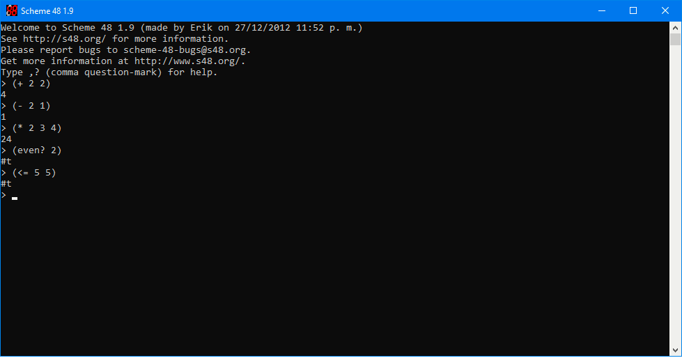
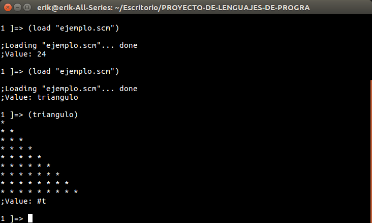

Lenguaje Scheme
Scheme es un dialecto de Lisp, es un lenguaje interpretado, muy expresivo y soporta varios paradigmas. Fue desarrollado por Guy L. Steele y Gerald Jay Sussman en la década de los setenta e introducido en el mundo académico a través de una serie de artículos conocidos como los Lambda Papers de Sussman y Steele.
Fuente: https://www.ecured.cu/Scheme
Sintaxis básica
expresión -> átomo | lista
átomo -> número | string | indentificador | carácter | boolean
lista -> '('secuencia-expresión')'
secuencia-expresión -> expresión secuencia-expresión | expresión
función -> (nombre_función argumento1 argumento2 argumento3 ... argumento-n)
Tipos de datos
| átomo | Elemento básico -> Identificador, letras y digitos |
| boléanos | #t (verdadero), #f (falso) |
| números | 42, 2+3i, 3.16, 4/6 |
| listas | (Conjunto de elementos entre paréntesis): formado por átomos o listas |
| carácter | #\a, etc. |
| string | "hola" |
Operadores
El lenguaje Scheme usa la sintaxis polaca, así por ejemplo:
(+ 1 2 3) -> 6
A continuación, los operadores artiméticos:
| Operador | Operación |
|---|---|
| + | Suma cada uno de los argumentos |
| - | Primer argumento menos los restantes o negación del argumento |
| * | Multiplica cada uno de los argumentos |
| / | Primer argumento entre cada uno de los restantes |
| abs | Valor absoluto del argumento |
| exp | Exponencial |
| expt | Dados dos argumentos: a y b, calcula ab; |
| max | Máximo de sus argumentos |
| min | Mínimo de sus argumentos |
| sqrt | Raíz cuadrada del argumento no negativo |
Funciones de comparación aritmética
| Función | Significado |
|---|---|
| = | Igual (átomos numericos) |
| > | Mayor que |
| < | Menor que |
| >= | Mayor o igual que |
| <= | Menor o igual que |
| even? | ¿Es número par? |
| odd? | ¿Es número impar? |
| zero? | ¿Es cero? |
Fuente: http://www.gedlc.ulpgc.es/docencia/lp/documentacion/GB_Scheme.pdf
A continuación se muestra un ejemplo de aplicación de algunos de los operadores:
(+ 2 2) -> 4 (- 2 1) -> 1 (* 2 3 4) -> 24 (even? 2) -> true (<= 5 5) -> true
¿Qué es necesario descargar?
Para utilizar Scheme se tienen varias implementaciones. En el ejemplo anterior se utiliza Scheme 48. Está disponible para Windows, y también el código fuente, que permite contruir una versión para GNU/Linux o MAC.
Editar
En el caso de Scheme 48, se recomienda, segun la documentación ofical, utilizar GNU Emacs usando el paquete cmuscheme48 command. Para más información, visite la documentación oficial, en el apartado "Editing"
Otra opción es utiliar MIT/GNU Scheme, que solo está disponible para GNU/Linux y MAC.
Para instalarlo en Ubuntu o alguna distribución basada en Debian se puede utilizar los repositorios incluidos.
sudo apt-get install mit-scheme
Ejemplo de programa
(define (T)
(display "*"))
(define (dibuje cant)
(do ((i 0 (+ i 1)))
((= i cant) )
(t)
(display " ")))
(define (triangulo)
(do ((i 1 (+ i 1)))
((= i 10) )
(dibuje i)
(newline)))
Código obtenido de: http://ceciliaurbina.blogspot.com/2010/11/scheme.html
